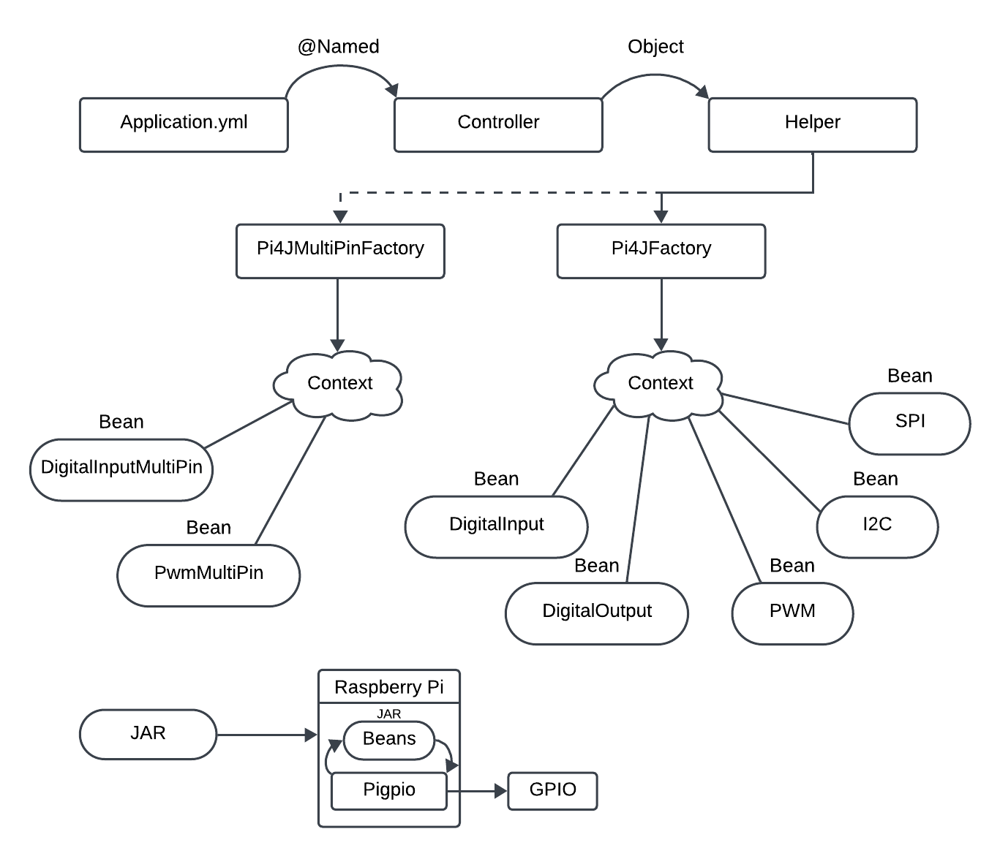

Communicating with a Hardware Component
Interacting with a hardware component is done through its communication type which determines its circuit setup and configuration.
For example, the LCD1602 component uses an I2C communication type which determines how the circuit is created by utilizing the I2C pins of the GPIO.
Based on the pins and communication type, you have to define the configuration in the yml file accordingly. If a user wants to implement multiple hardware components then the configuration should be defined in the snake yml structure.
YAML Configuration Workflow
-
The specifications in the yml file are given to the component in the controller through the use of the @Named() annotation.
-
The controller passes on the configuration to the helper through the object.
-
The communication types are initialized in the Pi4JFactory and Pi4JMultiPinFactory as beans with specifications as listed in the yml file.
-
The communication type configuration classes are in our utilities folder which define the methods and attributes which are used in the factory classes to apply the specifics listed in the yml file.
-
The factory classes create a context with all the beans which can be used by the different hardware components.
-
When the JAR file is ran on the RaspberryPi, the beans interact with the pigpio library to communicate with the GPIO pins.
